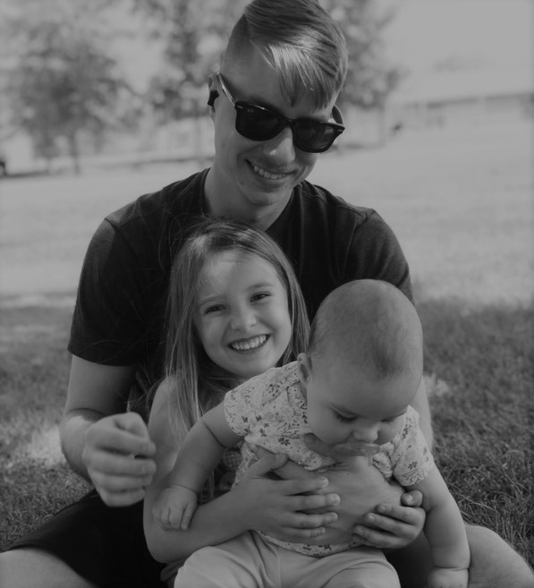

Ty Flannagan
Creator, software developer and machine learning analyst with real world experience. I intend to progress and build on my skills in an innovative industry and hope to surround myself with progressively like-minded people.
📭 tylerflannagan@yahoo.com // flannagantyler@gmail.com
Tech stack
JavaScript, TypeScript, NodeJS, Kotlin, Scala
React, React Native
HTML5, CSS3, GitHub, Ableton, Microsoft Office
Work History
👨🏻💻 MACHINE LEARNING SPECIALIST | Affirma Consulting, LLC
November 2021 - Present
Worked together with a team to build a semantic productivity application for Microsoft Office products such as Outlook and Excel.
- Analyzed and amended the predictions for a semantic based model in a machine learning environment.
- Used tools such as GitHub and VS Code to collaborate with other team members in maintaining a healthy and productive repository.
👨🏻💻 WEB DEVELOPER | AFI Technology
January 2020 – Present
Worked as a web developer to build and maintain a dynamic business orientated website using the React framework.
- Still work to maintain and keep site running.
- Main designer and responsible for code base.
👨🏻💻 Floor Supervisor | United Parcel Service
January 2020 – November 2021
Worked together with a large team in order to service the Southern California area with packages and supplies.
- Lead a team of individuals in a high paced, high-energy environment.
- Used metrics to track and help provide my team with more efficient ways of productivity.
👨🏻💻 Front Counter Salesman | Tec Equipment – Truck and Trailer
January 2014 - January 2020
Maintained and managed a $500,000 inventory by implementing new procedures and dispatching warehouse runners. Daily activities included front counter part sales and all shipping duties required to maintain a healthy inventory.
- Worked together with a team to supply and repair commercial sized transportation equipment.
- Helped customers daily with a wide range of issues.